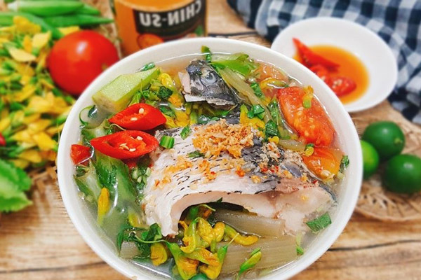

Back
Canh Chua Cá(Vietnameses Sour Soup)

One of many traditional Vietnameses soups that will have your mouth watering day and
night. Sour flavor will stick with you all your life.
Canh chua, also known as Vietnameses sweet & sour soup, comes from the Mekong
Delta in southern Vietnam. It includes a tamarind broth filled with fish
(typically catfish) from the delta, pineapple, tomatoes, elephant ear stalks,
and bean sprouts. And it is usually served with a side of white rice and
Ca Kho To. Like with many Vietnameses dishes, there are a ton of different
interpretations, and every family has their own version(of course, mine is the best).
Ingredients
-
4 catfish steaks (can be done with any fish or tofu for
vegetarian substitute, if catfish is not available)
- Chicken base powder
- 1/3 cup of tamarind soup base
- 8 cups of water
- ⅓ cup of vegetable oil
- ¼ cup of sugar
- ¼ cup of fish sauce
- 5 cloves garlic, minced
- 1 red Thai chili pepper, chopped (Tip: Use gloves)
- 8 pieces of okra
- 4 sprigs of culantro, chopped
- Small bundle of rice paddy herbs (ngo om), chopped
- 1 elephant ear stem (taro stem), peeled & diagonally chopped/li>
- 2 medium tomatoes, cut into quarter wedges
- 2 stalks of celery, diagonally chopped
- 1 cup of diced pineapples
- 1 handful of bean sprouts
- 4 green onions, chopped
- Juice from 1 lemon
- 1/4 cup Tabasco Sauce
- Salt and ground pepper
* Note: Some of the specialty herbs may be hard to find if you do not have a
local Asian market in your area. If so, the recipe can still be made substituting
those herbs with cilantro.
Steps
-
Season the catfish steaks on both sides with salt, pepper, and chicken base
powder and set aside.
-
In a medium pot over medium-high heat, add the vegetable oil then add the
minced garlic and fry until it is a light golden-brown. Set aside in a
small bowl to use to garnish the broth at the end.
-
Add 8 cups of water to the pot along with the tamarind soup base, sugar,
lemon juice, Tabasco Sauce, and fish sauce. Bring to a boil and cook
the catfish for about 6 to 8 minutes until the catfish is tender. Remove
the catfish and set aside to be added back in later.
-
Add the tomatoes, pineapples, elephant ear stem, okra, and celery. Cook
down to medium tenderness and then add the green onions, rice paddy herbs,
culantro, chili pepper, and bean sprouts. Cook for 2 minutes and add the
catfish back into the soup and continue cooking for an additional 2 minutes.
Taste the broth and season with fish sauce and tamarind soup base as needed.
-
Ladle the soup into bowls and garnish with the fried garlic.
Serve with a bowl of rice and enjoy!
Credit to Peter Nguyen
who made this recipe.